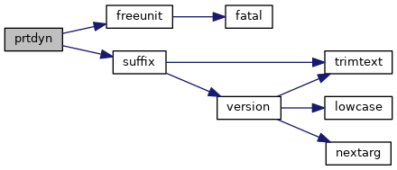
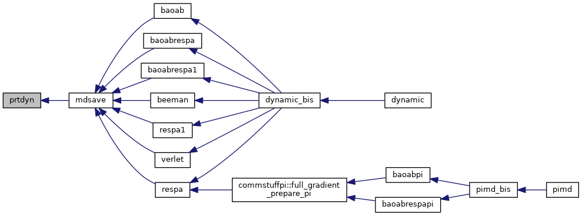

|
Tinker-HP v1.3
|
|
Tinker-HP v1.3
|
Go to the source code of this file.
Functions/Subroutines | |
| subroutine | prtdyn (suffix) |
| writes out the information needed to restart a molecular dynamics trajectory to an external disk file More... | |
| subroutine prtdyn | ( | character(*), intent(in) | suffix | ) |
writes out the information needed to restart a molecular dynamics trajectory to an external disk file
| [in] | suffix,: | suffix of the written file |
Definition at line 21 of file prtdyn.f90.
References freeunit(), and suffix().
Referenced by mdsave().


 1.8.5
1.8.5